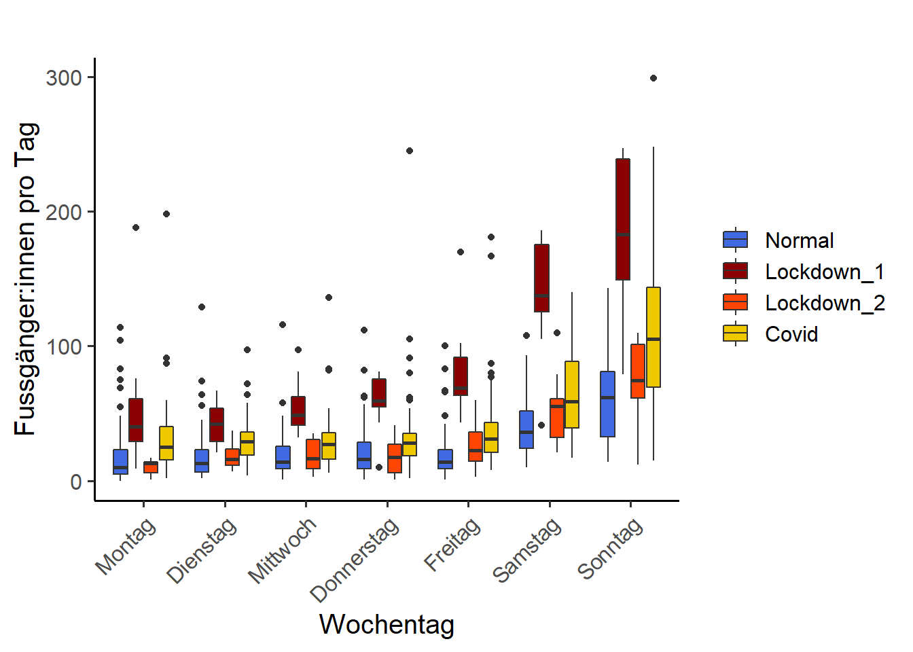
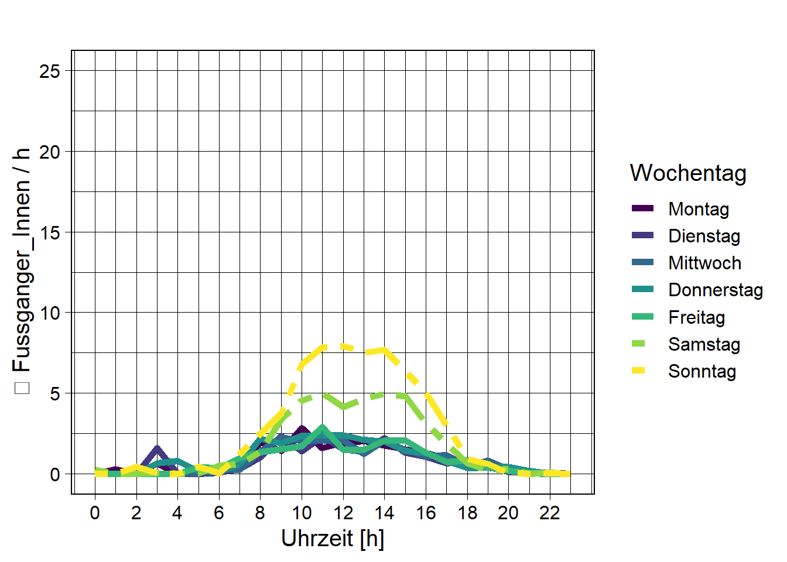
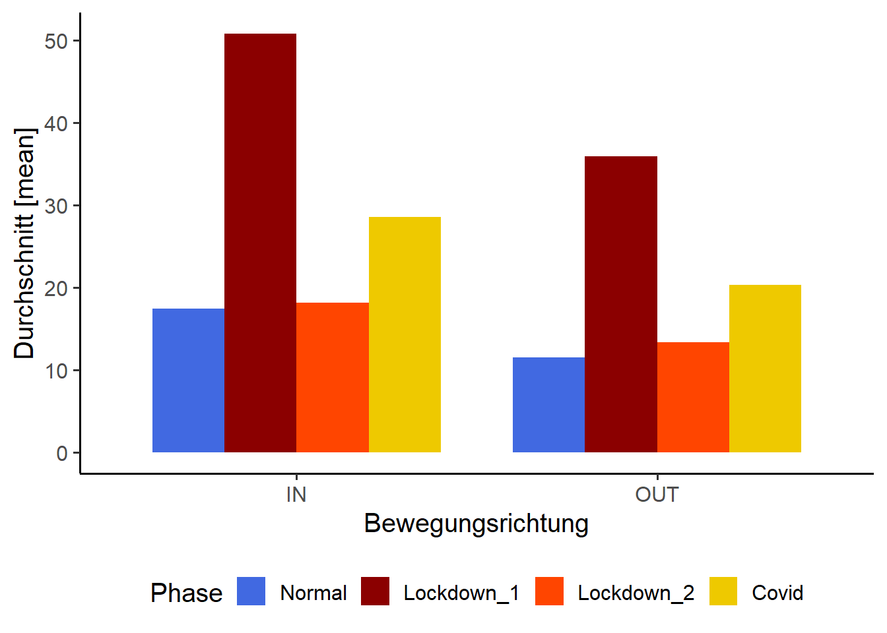
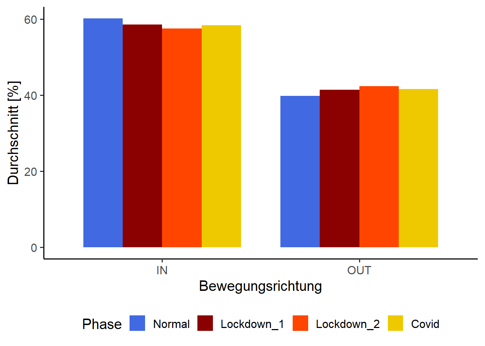

KW44 - Deskriptive Analysen - Übung
Biodiversity & Ecosystems (S)
Aufgabe 1: Verlauf der Besuchszahlen / m
Nachdem wir die Projektstruktur aufgebaut haben und die Daten vorbereitet sind, machen wir uns an die deskriptive Analyse. Dies macht eigentlich immer Sinn. Bevor mach sich an die schliessende Statistik macht, muss man ein “Gefühl” für die Daten bekommen. Dies funktioniert am einfachsten mit deskriptiven, explorativen Analysen.
Wir interessieren uns in den Analysen grundsätzlich für 4 Zeitabschnitte:
- Normal (vom Start der Erhebungen bis vor dem ersten Lockdown)
- Lockdown 1
- Lockdown 2
- Seit Covid, aber nicht während eines Lockdowns
Wir haben relativ lange Zeitreihen. Zur Visualisierung des generellen Trends greifen wir darum auf die aggregierten Daten zurück - das macht den Plot übersichtlicher und damit aussagekräftiger.
- Plottet den Verlauf der monatlichen Besuchszahlen an eurer Zählstelle. Auf der x-Achse steht dabei dabei Jahr und Monat (gespeichert im df depo_m), auf der y-Achse die monatlichen Besuchszahlen. Zeichnet auch die beiden Lockdown ein (Hinweis: rundet das Start- und Enddatum des Lockdowns auf den Monat, da im Plot die monatlichen Zahlen gezeigt werden).
Haltet euch dabei an untenstehenden Plot:
Hinweis: - Nutzt zum plotten ggplot() - folgende Codeschnipsel helfen euch:
ggplot(data = depo_m, mapping = aes(Ym, Total, group = 1))+ # group 1 braucht R, dass aus den Einzelpunkten ein Zusammenhang hergestellt wird
# zeichne Lockdown 1; ein einfaches Rechteck. bestimme mit min und max die Dimensionen
geom_rect(mapping = aes(xmin="2020 3", xmax="2020 5",
ymin =0, ymax=max(Total+(Total/100*10))), # das Rechteck soll 10 % grösser als die maximale Besuchszahl sein
fill = "lightskyblue", alpha = 0.4, colour = NA)+
# zeichne Lockdown 2
...+
# zeichne die Linie
geom_line(...)+
# bestimme manuell, wo auf der x-Achse die breaks sind und wie diese angeschrieben werden sollen
scale_x_discrete(breaks = c("...", "...", ...),
labels = c("...", "...", ...))+
theme_linedraw(base_size = 15)+
...- Exportiert euren Plot mit ggsave() nach results. Breite = 20, Höhe = 10, Einheiten = cm, dpi = 1000
Aufgabe 2: Wochengang
Nachdem wir nun wissen, wie sich die Besuchszahlen während der Untersuchungsdauer monatlich entwickelt haben, möchten wir genauer untersuchen, wie sich die Zahlen je nach Phase (Normal, Lockdown 1. Lockdown 2 und Covid) auf die Wochentage verteilen.
2a)
- Berechnet zuerst die Totale Anzahl pro Wochentag pro Phase.
mean_phase_wd <- depo_d %>%
group_by(...) %>%
...- Speichert das als .csv
write.csv(mean_phase_wd, "results/mean_phase_wd.csv")2b)
- Erstellt einen Boxplot nach untenstehender Vorgabe:

Hinweis: - Nutzt zum plotten ggplot() - folgende Codeschnipsel helfen euch:
ggplot(data = depo_d)+
geom_boxplot(mapping = aes(x= Wochentag, y = Total, fill = Phase))+
...- Exportiert auch diesen Plot mit ggsave(). Welche Breite und Höhe passt hier?
2c)
Sind die Unterschiede zwischen Werktag und Wochenende wirklich signifikant? Falls ja, in allen Phasen oder nur während bestimmter?
- Prüft das pro Phase mit einem einfachen t.test.
Aufgabe 3: Tagesgang
Vom Grossen zum Kleinen, von der Übersicht ins Detail. Jetzt widmen wir uns dem Tagesgang, das heisst der Verteilung der Besuchenden auf die 24 Tagesstunden je nach Phase.
3a)
- Berechnet zuerst den Mittelwert der Totalen Besuchszahlen pro Wochentag pro Stunde pro Phase. (ganz ähnlich wie unter 2a) und speichert das df unter Mean_h.
ggplots haben Daten lieber im Format long als wide.
3b)
- Plottet den Tagesgang, unterteilt nach den 7 Wochentagen nun für unsere 4 Phasen.

Für die Phase “Normal” benutze ich folgenden Codeschnipsel. Speichert den Plot ab (hier: tag_norm).
tag_norm <- ggplot(subset(Mean_h, Phase %in% c("Normal")),
mapping=aes(x = Stunde, y = Total, colour = Wochentag, linetype = Wochentag))+
...Hinweis: Achtet darauf, dass die Skalierung der y-Achse bei allen 4 Plots dieselbe ist (z.B. immer vom 0 bis 25).
3c)
- Arrangiert die vier erstellten Plots und speichert das Resultat. Das ist etwas tricky, darum hier der vollständige Code.
# Arrange und Export Tagesgang
ggarrange(tag_lock_1+ # plot 1 aufrufen
rremove("x.text")+ # plot 1 braucht es nicht alle Achsenbeschriftungen
rremove("x.title"),
tag_lock_2+ # plot 2 aufrufen
rremove("y.text")+ # bei plot 2 brauchen wir keine Achsenbeschriftung
rremove("y.title")+
rremove("x.text")+
rremove("x.title"),
tag_norm,
tag_covid+
rremove("y.text")+
rremove("y.title"),
ncol = 2, nrow = 2, # definieren, wie die plots angeordnet werden
heights = c(0.9, 1), # beide plots sind wegen der fehlenden Beschriftung nicht gleich hoch
widths = c(1,0.9),
labels = c("a) Lockdown 1", "b) Lockdown 2", "c) Normal", "d) Covid"),
label.x = 0.1, # wo stehen die Plottitel
label.y = 0.99,
common.legend = TRUE, legend = "bottom") # wir brauchen nur eine Legende, unten
ggsave("Tagesgang.png", width=25, height=25, units="cm", dpi=1000,
path = "results/")Aufgabe 4: Kennzahlen
Schliesslich berechnen wir noch einige Kennzahlen (Anzahl Passagen, Richtungsverteilung, …).
4a)
Gruppiert nach Phase und berechnet dieses mal die Summe (nicht den Durchschnitt) Total, IN und OUT (ähnlich wie in 2a und 3a).
Speichert das Ergebnis als .csv
4b)
Die Zeitreihen der 4 Phasen unterscheiden sich deutlich voneinander. Totale Summen sind da kaum miteinander vergleichbar, besser eignet sich der Durchschnitt oder der Median.
Gruppiert nach Phase und berechnet den Durchschnitt Total, IN und OUT und speichert das df unter mean_phase_d.
Ergänzt das mit der prozentualen Richtungsverteilung
mean_phase_d <- mean_phase_d %>%
mutate(Proz_IN = round(100/Total*IN, 1)) %>% # berechnen und auf eine Nachkommastelle runden
...Speichert das Ergebnis als .csv
Selektiert nun die absoluten Zahlen im df mean_phase_d sowie die relativen und speichert das jeweils in einem df mean_phase_d_abs und mean_phase_d_proz.
mean_phase_d_abs <- mean_phase_d %>% dplyr::select(-c(Total, Proz_IN, Proz_OUT))- transformiert beide df mittels pivot_longer() von wide zu long:
mean_phase_d_abs <- pivot_longer(mean_phase_d_abs, cols = c("IN","OUT"),
names_to = "Gruppe", values_to = "Durchschnitt")4c)
Nun visualisieren wie die Verteilung der absoluten und der relativen Zahlen nach Phasen in einem Barplot.
- Erstellt je einen Plot zu den absoluten und den relativen Zahlen nach den unterstehenden Vorgaben und speichert beide Plots im Environment:


- Arrangiert beide Plots nebeneinander und exportiert das Ergebnis (Arrangieren siehe 3c).